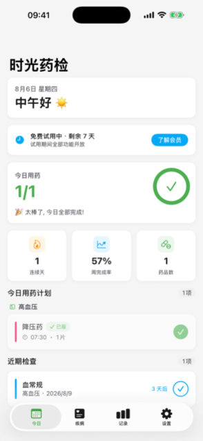
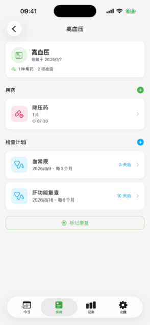
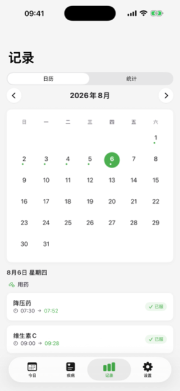
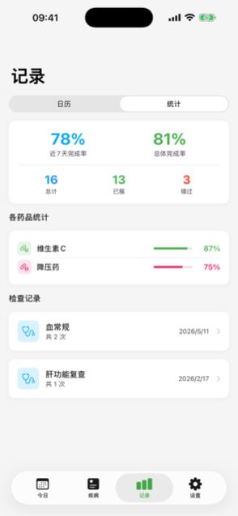

按疾病管理每天的用药与定期检查，帮你按时服药、按时复查。
数据只存在本机，无账号、无自建服务器；可选备份也只进你自己的 iCloud。

极简设计，只做提醒与记录这一件事，并把它做好。
自定义药品、剂量与服药时间，点一下完成打卡；错过打卡 30 分钟再提醒一次，已打卡的时段不再打扰。
以疾病为维度组织药品与检查计划；康复后一键结束，不再生成待办与提醒。
设置下次日期与固定重复周期，提前 1/3/7 天提醒；完成后自动排期下一次。
化验单、报告单拍照随记录保存，全屏缩放翻阅，可随时导出分享。
日历回顾每一天的用药与检查，连续打卡天数、完成率一目了然。
备份保存在你自己的 iCloud Drive，换机可整体恢复；也可随时导出全部数据与照片。
今日待办、疾病详情、日历与统计。



三个不：无账号、无追踪、无自建服务器。
所有记录保存在你的 iPhone 上，App 自身没有任何自建服务器，不向开发者上传数据。
可选备份由 Apple iCloud 服务承载，仅本人可见，连开发者都无法访问。
开箱即用，无需注册；不做任何行为追踪，报告单照片不随系统整机备份外泄。
免费版含横幅广告；订阅会员仅用于去除广告，不锁任何功能。
订阅后完全无广告。可随时在「设置 > Apple ID > 订阅」中管理或取消。